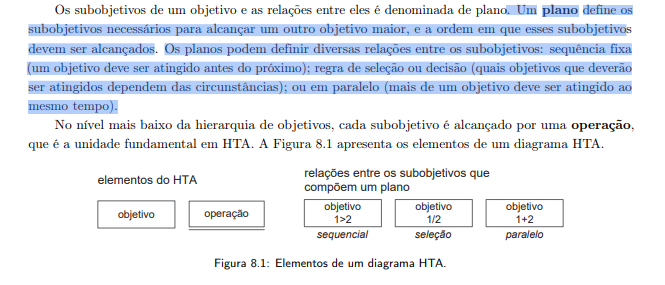
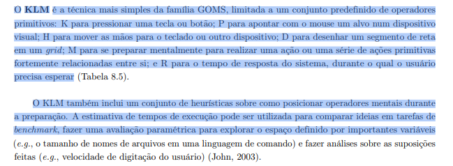
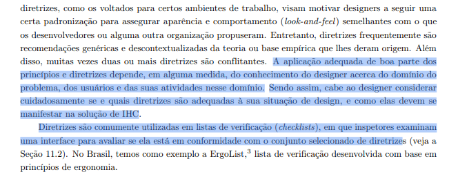
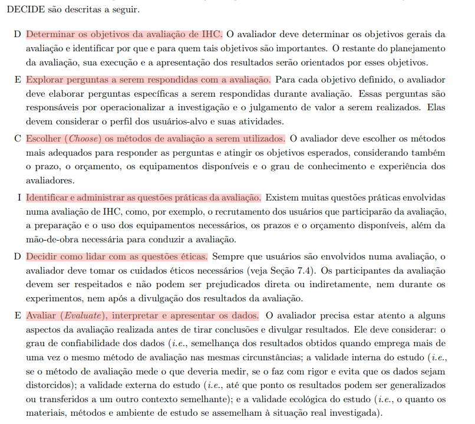
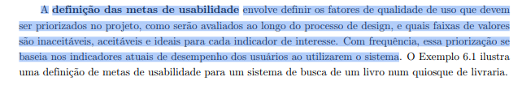
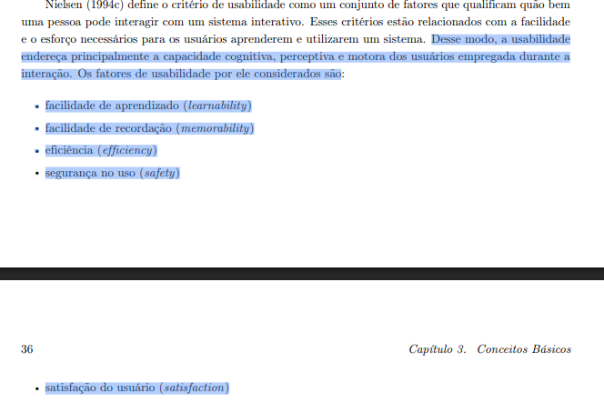
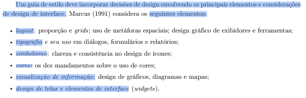

Autoinspeção Geral¶
Introdução¶
Este documento registra a realização da autoinspeção geral do projeto, reunindo os itens de todas as entregas.
Gravação da Inspeção¶
Acesse também pelo link: https://youtu.be/D7asoYXsyAA
Tabela de contribuição¶
| Artefato(s) | Autor(es) |
|---|---|
| Autoinspeção geral | Hugo Freitas Silva, Ingrid Alves, Maria Laura Regis, Nathan Pontes e Philipe Amancio |
Autores da Inspeção (avaliadores)¶
| Artefato(s) | Autor(es) |
|---|---|
| Realização da inspeção geral | Hugo Freitas Silva, Ingrid Alves, Maria Laura Regis, Nathan Pontes e Philipe Amancio |
Resultado da Inspeção¶
A tabela 1 apresenta o resultado da autoinspeção realizada pelo grupo com base na Lista de Verificação Geral.
| Nº | Categoria | Pergunta | Avaliação | Observações |
|---|---|---|---|---|
| 1 | Itens do desenvolvimento do projeto | O histórico de versão padronizado? | Sim | - |
| 2 | Itens do desenvolvimento do projeto | O(s) autor(es) e o(s) revisor(es) para cada artefato? | Incompleto | Faltam revisores para alguns artefatos. |
| 3 | Itens do desenvolvimento do projeto | Referências bibliográficas e/ou bibliografia em todos os artefatos? | Sim | - |
| 4 | Itens do desenvolvimento do projeto | As tabelas e imagens possuem legenda e fonte e elas chamadas dentro do texto? | Incompleto | As tabelas e imagens existem, mas não são chamadas no texto. |
| 5 | Itens do desenvolvimento do projeto | Um texto fazendo uma introdução dos artefatos? | Sim | - |
| 6 | Itens do desenvolvimento do projeto | O cronograma executado com quem realizou cada artefato/atividade com as datas de início e fim da construção/realização do artefato/atividade. | Incompleto | Não possui cronograma executado das entregas 7 e 8. |
| 7 | Itens do desenvolvimento do projeto | Ata(s) da(s) reuniões (com data, horário de início e do final, participantes, objetivo, atividades definidas etc). | Incompleto | Não possui todas as atas das reuniões. |
| 8 | Itens do desenvolvimento do projeto | A gravação da reunião do grupo. | Sim | - |
| 9 | Itens do desenvolvimento do projeto | Vídeo de apresentação na categoria "não listado" no youtube? | Sim | - |
| 10 | Itens do desenvolvimento do projeto | Tabela de contribuição no início do artefato com o nome de todos os integrantes com a contribuição de cada integrante com hiperligação atividade e da gravação, se houver. | Incompleto | Faltam tabelas de contribuição em algumas inspeções. |
| 11 | Itens do desenvolvimento do projeto | A seção de agradecimentos apresentando o uso de Inteligência Artificial (IA) Generativa no artefato. | Sim | - |
| 12 | Apresentação da Equipe | Uma página apresentando os integrantes da equipe (com foto) com nome e sem matrícula? | Sim | - |
| 13 | Cronograma | O cronograma do planejamento apresenta todas as atividades de todas as etapas para cada integrante com as datas de início e fim das entrega dos artefatos e com o período da revisão deles? | Sim | - |
| 14 | Cronograma | O cronograma do planejamento apresenta um período de gravação da apresentação de cada etapa? | Sim | - |
| 15 | Cronograma | O cronograma prevê um período de revisão/ajustes nos artefatos devidos às considerações dos monitores/professor? | Não | - |
| 16 | Cronograma | O planejamento inicial foi seguido conforme definido ao longo do projeto? | Não | O cronograma planejado não foi estritamente seguido. |
| 17 | Site Selecionado | A motivação e os critérios para a escolha do site estão documentados? | Sim | - |
| 18 | Site Selecionado | O planejamento e avaliação dos sites selecionados está documentado? | Sim | - |
| 19 | Site Selecionado | O site escolhido já foi analisado nos semestres anteriores? | Não | - |
| 20 | Site Selecionado | O site apresenta padronização visual (cores, fontes, espaçamento)? | Sim | - |
| 21 | Site Selecionado | O site apresenta boa legibilidade (contraste, tamanho de fonte, espaçamento entre linhas)? | Sim | - |
| 22 | Site Selecionado | A navegação entre páginas é clara e consistente? | Sim | - |
| 23 | Processo de Design | A justificativa da escolha do Processo de Design está documentada? Inclui referência bibliográfica da fonte e foto do texto da referência? | Sim | - |
| 24 | Processo de Design | Cada integrante da equipe elaborou ao menos 1 item de conteúdo da disciplina com referência bibliográfica da fonte e foto do texto da referência? | Sim | - |
| 25 | Processo de Design | Os conceitos teóricos estão corretamente aplicados nos artefatos desenvolvidos? | Sim | - |
| 26 | Portal (GitHub Pages) | O portal apresenta os artefatos: Planejamento do Projeto, equipe, lista de sites avaliados, site selecionado, Ferramentas do projeto, Processo de Design e cronograma das atividades? | Sim | - |
| 27 | Portal (GitHub Pages) | Uma página com as atas de reunião com o acesso à gravação (vídeo), quando houver? | Sim | - |
| 28 | Portal (GitHub Pages) | O site apresenta opção de contraste de cores? | Sim | - |
| 29 | Portal (GitHub Pages) | O site apresenta uma explicação clara do contexto da avaliação de IHC realizada (objetivo, escopo e método utilizado)? | Sim | - |
| 30 | Perfil do Usuário | O perfil do usuário é definido por mais de uma forma (técnica de elicitação e/ou ferramenta)? | Sim | - |
| 31 | Perfil do Usuário | O perfil do usuário possui os atributos de um perfil? (Ex: dados demográficos, experiência no cargo, informações sobre a empresa, educação, etc). | Sim | - |
| 32 | Perfil do Usuário | Foram utilizadas no mínimo duas técnicas para coletar dados e levantar os requisitos dos usuários? Inclui referência bibliográfica da fonte e foto do texto? | Sim | - |
| 33 | Aspectos Éticos | Os 4 princípios (da autonomia, da beneficência, da não maleficência e da justiça e equidade) estão descritos? Inclui referência bibliográfica da fonte e foto do texto da referência? | Sim | - |
| 34 | Aspectos Éticos | O Termo de Consentimento Livre e Esclarecido (TCLE) foi devidamente apresentado e anexado nas pesquisas envolvendo pessoas? Inclui referência bibliográfica e foto do texto da referência explicando o TCLE? | Sim | - |
| 35 | Aspectos Éticos | Considera aspectos éticos de pesquisas envolvendo pessoas? Inclui referência bibliográfica da fonte e foto do texto da referência. (BARBOSA et al., 2021, p. 117) [PRINT] |
Sim | - |
| 36 | Personas | Os dados levantados para o Perfil do Usuário foram sintetizados de forma clara em Personas, com objetivos e motivações definidas? | Sim | - |
| 37 | Cenários | Os Cenários estão documentados? Inclui referência bibliográfica da fonte e foto do texto da referência explicando os cenários? | Sim | - |
| 38 | Análise de Tarefas | Possui a Análise de Tarefas? Inclui referência bibliográfica da fonte, foto do texto da referência e o nome do Autor? | Sim | - |
| 39 | Análise de Tarefas | Há uma atividade para cada integrante do grupo modelizada em ao menos duas técnicas para especificar as tarefas? (Ex: HTA com diagrama/legenda/tabela; e GOMS/KLM/CTT). | Incompleto | Um dos integrantes não tem atividade de análise de tarefas. |
| 40 | Análise de Tarefas | Os diagramas da Análise Hierárquica de Tarefas (HTA) possuem os "planos" descritos de forma lógica, garantindo a sequência correta da operação? (BARBOSA et al., 2021, p. 179) [PRINT]  |
Sim | - |
| 41 | Análise de Tarefas | Nas modelagens preditivas, os operadores (K, P, M, etc.) e os cálculos de tempo em segundos foram detalhados passo a passo para o cenário avaliado? (BARBOSA et al., 2021, p. 181) [PRINT]  |
Sim | - |
| 42 | Características da Plataforma | As características da plataforma para o projeto foram claramente definidas e documentadas? | Incompleto | A versão do navegador não foi especificada. |
| 43 | Princípios Gerais de Projeto | Os Princípios Gerais de Projeto que serão utilizados foram definidos? O artefato inclui referência bibliográfica da fonte e foto do texto original explicando esses princípios? | Sim | - |
| 44 | Princípios Gerais de Projeto | Os Princípios Gerais contemplam todos os 8 tópicos exigidos (expectativas, simplicidade, controle/liberdade, consistência, antecipação, visibilidade, conteúdo e prevenção de erros)? | Sim | - |
| 45 | Princípios Gerais de Projeto | O grupo identificou e justificou claramente quais princípios gerais foram seguidos ou violados na interface avaliada? (BARBOSA et al., 2021, p. 238) [PRINT]  |
Sim | - |
| 46 | Princípios Gerais de Projeto | Existe uma justificativa fundamentada na literatura para a escolha ou relevância de cada princípio no contexto do sistema analisado? (BARBOSA et al., 2021, p. 280) [PRINT]  |
Sim | - |
| 47 | Metas de Usabilidade | As metas de usabilidade que devem ser alcançadas estão bem definidas? Inclui referência bibliográfica e foto do texto base? | Sim | - |
| 48 | Metas de Usabilidade | A equipe justificou adequadamente a razão para a seleção dessas metas de usabilidade específicas? | Sim | - |
| 49 | Metas de Usabilidade | O documento de Metas de Usabilidade define quantitativamente as faixas de valores (inaceitáveis, aceitáveis e ideais) para cada indicador de qualidade priorizado? (BARBOSA et al., 2021, p. 117) [PRINT]  |
Não | Os valores não foram definidos quantitativamente. |
| 50 | Metas de Usabilidade | As metas de usabilidade tratam dos fatores de usabilidade de Nielsen: facilidade de aprendizado, facilidade de recordação, eficiência, segurança de uso e satisfação do usuário? (BARBOSA et al., 2021, p. 35-36) [PRINT]  |
Sim | - |
| 51 | Guia de Estilo | O Guia de Estilo do projeto foi construído? O artefato contém referência bibliográfica da fonte e foto do texto acadêmico explicando o que é um Guia de Estilo? | Sim | Disponibilizar o guia de estilo com prints, além do Figma. |
| 52 | Guia de Estilo | O Guia de Estilo segue rigorosamente a estrutura de 6 partes (1. Introdução, 2. Resultados de análise, 3. Elementos de interface, 4. Elementos de interação, 5. Elementos de ação, 6. Vocabulário e padrões)? Inclui referência e foto do texto original? | Sim | - |
| 53 | Guia de Estilo | As definições estabelecidas no Guia de Estilo correspondem de fato à realidade visual e interativa do site que está sendo avaliado? | Sim | - |
| 54 | Guia de Estilo | O guia de estilo trata sobre todos os tópicos: layout, tipografia, simbolismo, cores, visualização de informação, design de telas e elementos de interface? (BARBOSA et al., 2021, p. 257) [PRINT]  |
Sim | - |
| 55 | Itens do planejamento da avaliação da analise de tarefas | O planejamento da avaliação segue o Framework DECIDE? | Sim | - |
| 56 | Itens do planejamento da avaliação da analise de tarefas | Descreve o(s) objetivo(s) da avaliação? (apropriação de tecnologia pelos usuários; ideias e alternativas de design; conformidade com um padrão; e/ou problemas na interação e na interface na fase do modelo conceitual) | Sim | - |
| 57 | Itens do planejamento da avaliação da analise de tarefas | Os métodos de avaliação a serem utilizados? Adicionar referência bibliográfica da fonte e foto do texto da referência explicando os métodos de avaliação. | Sim | - |
| 58 | Itens do planejamento da avaliação da analise de tarefas | As questões práticas da avaliação (sobre o recrutamento dos usuários que participarão da avaliação (onde e o perfil), quantos usuários participarão da avaliação e a razão dessa quantidade, presencial real ou remota; a preparação e o uso dos equipamentos necessários, os prazos; o orçamento; recursos de mão-de-obra necessária para conduzir a avaliação)? | Sim | - |
| 59 | Itens do planejamento da avaliação da analise de tarefas | As questões éticas (se os participantes da avaliação devem ser respeitados e não podem ser prejudicados direta ou indiretamente, nem durante os experimentos, nem após a divulgação dos resultados da avaliação.) | Sim | - |
| 60 | Itens do planejamento da avaliação da analise de tarefas | Um cronograma (data e horário) e local para realização da avaliação do StoryBoard e da Análise das Tarefas? | Sim | - |
| 61 | Itens do planejamento da avaliação da analise de tarefas | Quantidade de storyboards é igual à quantidade de integrantes do grupo? | Não | Falta o artefato de um integrante. |
| 62 | Itens do planejamento da avaliação da analise de tarefas | Resultado do teste piloto não será apresentado no resultado da avaliação | Sim | - |
| 63 | Itens do planejamento da avaliação da analise de tarefas | Os itens que o avaliador deve realizar/anotar durante a avaliação (listar os problemas encontrados, priorizar a correção dos problemas não resolvidos)? | Sim | - |
| 64 | Itens do planejamento da avaliação da analise de tarefas | O planejamento da avaliação da análise de tarefas considera todas as tarefas analisadas anteriormente pelo grupo? | Sim | - |
| 65 | Itens do planejamento da avaliação da analise de tarefas | Nos planejamentos, foram definidas as perguntas exploratórias com base no framework DECIDE? | Sim | - |
| 66 | Itens do planejamento da avaliação da analise de tarefas | Os planejamentos da avaliação de análise de tarefas possuem um roteiro bem definido e padronizado de entrevista? | Sim | - |
| 67 | Itens do planejamento da avaliação da analise de tarefas | O planejamento da avaliação apresenta um modelo de Termo de Consentimento Livre e Esclarecido (TCLE) que garanta formalmente ao participante o anonimato, o sigilo dos dados, o direito de desistência a qualquer momento e a permissão para gravação de voz/imagem? | Sim | - |
| 68 | Itens do planejamento do relato dos resultados da análise de tarefa | A estrutura do relatório do resultado da avaliação (os objetivos da avaliação; uma breve descrição do método de prototipação em papel; o número e o perfil de avaliadores e dos participantes; as tarefas executadas pelos participantes; lista de problemas encontrados etc.) | Sim | - |
| 69 | Itens do planejamento do relato dos resultados da análise de tarefa | No planejamento do relato dos resultados, a identificação de problema planeja identificar para cada problema: local onde ocorreu; descrição e justificativa; discussão, indicando os fatores de usabilidade prejudicados; sugestões de solução. | Sim | - |
| 70 | Itens do storyboard | Cada desenho do StoryBoard está relacionado a uma especificação do artefato da Análise de Tarefas? | Sim | Faltou um hiperlink. |
| 71 | Itens do storyboard | Quantidade de storyboards é igual à quantidade de integrantes do grupo? | Não | Falta o artefato de um integrante. |
| 72 | Itens do storyboard | O Storyboard apresenta de forma clara o Cenário, ilustrando visualmente as pessoas envolvidas, o ambiente físico onde a ação ocorre e a tarefa que está sendo realizada? | Sim | - |
| 73 | Itens do relato dos resultados da avaliação do cenário | O relato dos resultados documenta claramente os objetivos que motivaram a avaliação e recapitula a metodologia utilizada (método de avaliação, como os dados foram coletados e o perfil dos participantes reais)? | Sim | - |
| 74 | Itens do relato dos resultados da avaliação do cenário | O documento apresenta um registro claro e consolidado dos problemas de IHC encontrados durante a avaliação (no Storyboard ou na Análise de Tarefas), descrevendo onde o problema ocorreu e justificando por que é considerado um problema? | Sim | - |
| 75 | Itens do relato dos resultados da avaliação do cenário | Para cada problema de usabilidade ou quebra de expectativa identificado durante a avaliação, o relato fornece sugestões práticas de solução, alternativas de design ou recomendações de reprojeto para o artefato? | Sim | - |
| 76 | Itens do relato dos resultados da avaliação do cenário | O relato documenta o feedback qualitativo dos participantes (opiniões, sugestões e grau de satisfação) e aponta tendências de comportamento observadas durante a interação com as tarefas propostas? | Sim | - |
| 77 | Itens do relato dos resultados da avaliação do cenário | Foi feita a avaliação de todos os artefatos desenvolvidos (cenários, análise de tarefa e storyboard)? | Não | Faltam o storyboard, o cenário e a análise de tarefa de um integrante. |
| 78 | Itens do relato dos resultados da avaliação do cenário | Todos os relatos seguem o modelo criado pelo grupo na entrega 5? | Sim | - |
| 79 | Itens do relato dos resultados da avaliação do cenário | A gravação da avaliação consta no Git Pages? | Sim | - |
| 80 | Itens do protótipo de papel | O protótipo representa as principais telas e fluxos da tarefa? | Sim | - |
| 81 | Itens do protótipo de papel | Os elementos da interface são compreensíveis para o usuário? | Sim | - |
| 82 | Itens do protótipo de papel | O protótipo permite simular as interações previstas? | Sim | - |
| 83 | Itens do planejamento da avaliação protótipo de papel | O planejamento define as etapas de preparação, coleta de dados, interpretação, consolidação e relato dos resultados? | Sim | - |
| 84 | Itens do planejamento da avaliação protótipo de papel | A gravação do teste piloto consta no Git Pages? | Incompleto | Algumas avaliações constam, mas outras não possuem o teste piloto disponível. |
| 85 | Itens do planejamento da avaliação protótipo de papel | Foi estimado o tempo de duração total do teste e de cada tarefa proposta aos participantes? | Sim | Consta no Termo de Consentimento. |
| 86 | Itens do planejamento da avaliação protótipo de papel | O planejamento da avaliação do protótipo de papel segue o framework DECIDE? | Sim | - |
| 87 | Itens do planejamento da avaliação protótipo de papel | O planejamento possui definição e data de realização do teste piloto? | Sim | - |
| 88 | Itens do planejamento do relato dos resultados protótipo de papel | Todos os papéis necessários para a realização da análise estão definidos e designados? | Sim | - |
| 89 | Itens do planejamento do relato dos resultados protótipo de papel | O planejamento do relato dos resultados do protótipo de papel possui um roteiro bem definido e padronizado para a entrevista? | Sim | - |
| 90 | Relato dos Resultados do Protótipo de Papel | O relato apresenta claramente os objetivos da avaliação do protótipo de papel? | Incompleto | Não constam respostas diretas às perguntas propostas. |
| 91 | Relato dos Resultados do Protótipo de Papel | O relato descreve o perfil dos participantes e o contexto de realização da avaliação? | Sim | - |
| 92 | Relato dos Resultados do Protótipo de Papel | O relato documenta claramente os problemas de usabilidade encontrados durante a avaliação do protótipo de papel? | Sim | - |
| 93 | Relato dos Resultados do Protótipo de Papel | O relato apresenta sugestões de melhorias ou recomendações de reprojeto com base nos resultados obtidos? | Sim | - |
| 94 | Relato dos Resultados do Protótipo de Papel | O relato apresenta evidências da avaliação, como imagens, registros, transcrições ou trechos relevantes das observações realizadas? | Sim | - |
| 95 | Relato dos Resultados do Protótipo de Papel | O relato apresenta uma análise consolidada do feedback qualitativo dos participantes? | Sim | - |
| 96 | Relato dos Resultados do Protótipo de Papel | O relato evidencia como os resultados obtidos influenciarão a construção do protótipo de alta fidelidade? | Sim | - |
| 97 | Planejamento da Avaliação do Protótipo de Alta Fidelidade | O planejamento da avaliação do protótipo de alta fidelidade segue o framework DECIDE? | Sim | - |
| 98 | Planejamento da Avaliação do Protótipo de Alta Fidelidade | O planejamento define objetivos claros e mensuráveis para a avaliação? | Sim | - |
| 99 | Planejamento da Avaliação do Protótipo de Alta Fidelidade | O planejamento apresenta as tarefas que serão executadas pelos participantes durante a avaliação? | Sim | - |
| 100 | Planejamento da Avaliação do Protótipo de Alta Fidelidade | O planejamento define os papéis dos avaliadores e participantes envolvidos na avaliação? | Sim | - |
| 101 | Planejamento da Avaliação do Protótipo de Alta Fidelidade | O planejamento apresenta cronograma e estimativa de tempo das atividades de avaliação? | Incompleto | Apresenta as datas do teste piloto e das avaliações, mas não as datas de elaboração dos relatos dos resultados. |
| 102 | Planejamento da Avaliação do Protótipo de Alta Fidelidade | O planejamento define os métodos e instrumentos de coleta de dados que serão utilizados? | Sim | - |
| 103 | Planejamento do Relato dos Resultados do Protótipo de Alta Fidelidade | O planejamento define como os resultados da avaliação serão organizados e apresentados? | Sim | Há uma estrutura padronizada. |
| 104 | Planejamento do Relato dos Resultados do Protótipo de Alta Fidelidade | O planejamento estabelece critérios para análise e interpretação dos dados coletados? | Incompleto | A estrutura define o relato de dados quantitativos e qualitativos, mas não estabelece como realizar a interpretação a partir deles. |
| 105 | Planejamento do Relato dos Resultados do Protótipo de Alta Fidelidade | O planejamento define quais métricas ou indicadores serão utilizados para avaliar a experiência do usuário? | Sim | - |
| 106 | Sobre o Desenvolvimento do Projeto | As gravações das avaliações e dos testes piloto estão disponíveis no Git Pages? | Sim | Consta nos planejamentos de avaliação. |
| 107 | Protótipo de Alta Fidelidade | O protótipo contempla as funcionalidades definidas nos requisitos priorizados? | Sim | - |
| 108 | Protótipo de Alta Fidelidade | O protótipo apresenta consistência visual entre telas, componentes e padrões de navegação? | Sim | - |
| 109 | Protótipo de Alta Fidelidade | O protótipo incorpora as melhorias identificadas durante a avaliação do protótipo de papel? | Sim | - |
| 110 | Protótipo de Alta Fidelidade | O protótipo permite a execução dos principais fluxos de interação previstos para os usuários? | Sim | - |
| 111 | Protótipo de Alta Fidelidade | Os elementos de interface seguem princípios de usabilidade e acessibilidade? | Incompleto | Alguns princípios foram violados no protótipo de agendamento de exames. |
| 112 | Protótipo de Alta Fidelidade | O protótipo apresenta feedback visual adequado para as ações dos usuários? | Incompleto | Alguns protótipos representam os fluxos de maneira muito simplificada. |
| 113 | Protótipo de Alta Fidelidade | O protótipo possui fidelidade suficiente para representar o produto final esperado? | Sim | - |
| 114 | Relato dos Resultados da Avaliação do Protótipo de Alta Fidelidade | O relato apresenta claramente os objetivos da avaliação realizada? | Sim | - |
| 115 | Relato dos Resultados da Avaliação do Protótipo de Alta Fidelidade | O relato descreve os participantes, o contexto e o método utilizado na avaliação? | Sim | - |
| 116 | Relato dos Resultados da Avaliação do Protótipo de Alta Fidelidade | O relato apresenta os resultados obtidos de forma organizada e compreensível? | Sim | - |
| 117 | Relato dos Resultados da Avaliação do Protótipo de Alta Fidelidade | O relato documenta os problemas de usabilidade identificados durante a avaliação? | Sim | - |
| 118 | Relato dos Resultados da Avaliação do Protótipo de Alta Fidelidade | O relato apresenta evidências da avaliação, como imagens, gravações, anotações ou transcrições? | Sim | Há gravações e anotações. |
| 119 | Relato dos Resultados da Avaliação do Protótipo de Alta Fidelidade | O relato apresenta uma análise consolidada dos dados qualitativos e quantitativos coletados? | Sim | - |
| 120 | Relato dos Resultados da Avaliação do Protótipo de Alta Fidelidade | O relato apresenta conclusões fundamentadas a partir dos resultados obtidos? | Sim | - |
| 121 | Relato dos Resultados da Avaliação do Protótipo de Alta Fidelidade | O relato identifica recomendações de melhorias para futuras versões do sistema? | Sim | - |
| 122 | Relato dos Resultados da Avaliação do Protótipo de Alta Fidelidade | O relato demonstra se os objetivos definidos no planejamento da avaliação foram alcançados? | Incompleto | Poderia ser mais explícito e detalhado. Os dados são apresentados, mas poderia existir uma conclusão melhor descrita. |
| 123 | Sobre o Desenvolvimento do Projeto | As gravações das avaliações e dos testes realizados estão disponíveis no Git Pages? | Sim | Todos os testes realizados possuem gravação. |
| 124 | Referência e Autor do Item | Todos os itens das listas de verificação anteriores possuem o autor do item identificado? | Sim | - |
| 125 | Referência e Autor do Item | Todos os itens das listas de verificação anteriores possuem a fonte/referência bibliográfica identificada? | Incompleto | - |
| 126 | Referência e Autor do Item | As referências citadas nos itens (ex.: Barbosa et al., 2021) seguem um padrão de citação consistente entre todas as listas? | Sim | - |
| 127 | Referência e Autor do Item | Existe correspondência entre o autor do item e o integrante responsável pela respectiva categoria da lista? | Sim | - |
| 128 | Referência e Autor do Item | As referências bibliográficas completas constam na seção de referências do artefato, e não apenas citadas nos itens? | Não | - |
| 129 | Foto / Evidência Visual | Os itens que indicam possuir foto/print de evidência apresentam o link ou imagem corretamente acessível? | Sim | - |
| 130 | Foto / Evidência Visual | As imagens/prints referenciados correspondem de fato ao conteúdo descrito na pergunta do item? | Sim | - |
| 131 | Foto / Evidência Visual | Itens de categorias semelhantes (ex.: avaliação, relato, planejamento) mantêm o mesmo padrão quanto à presença ou ausência de foto? | Incompleto | - |
| 132 | Foto / Evidência Visual | Quando não há foto disponível para um item, isso está claramente indicado em vez de omitido? | Não | - |
| 133 | Quantidade de Itens | A quantidade total de itens de cada lista de verificação anterior está corretamente contabilizada e numerada sem lacunas? | Sim | - |
| 134 | Quantidade de Itens | A quantidade de itens é proporcional à abrangência da categoria avaliada (nem insuficiente, nem redundante)? | Sim | - |
| 135 | Quantidade de Itens | A numeração dos itens é sequencial e única dentro de cada lista de verificação? | Sim | - |
| 136 | Quantidade de Itens | Cada categoria/sub-lista possui pelo menos um item de verificação associado a ela? | Sim | - |
| 137 | Inspeção | Cada item das listas anteriores foi efetivamente inspecionado, com o resultado da inspeção registrado (ex.: "Aplicável", "Não aplicável", "Não atendido")? | Sim | - |
| 138 | Inspeção | O grupo responsável pela inspeção está identificado para cada lista de verificação avaliada? | Sim | - |
| 139 | Inspeção | Existem evidências (gravação, ata ou registro) do processo de inspeção realizado sobre as listas anteriores? | Incompleto | - |
| 140 | Inspeção | Os resultados da inspeção apontam não conformidades de forma clara, permitindo ação corretiva pelo grupo inspecionado? | Sim | - |
| 141 | Inspeção | Houve verificação cruzada entre os autores dos itens e os avaliadores responsáveis pela inspeção, evitando autoavaliação? | Sim | - |
Fonte: autoria própria
Totalização¶
| Avaliação | Quantidade |
|---|---|
| Sim | 114 |
| Não | 9 |
| Incompleto | 17 |
| Não informado | 1 |
| Total | 141 |
Histórico de Versão¶
| Versão | Data | Descrição | Autores | Data Revisão | Descrição Revisão | Revisores |
|---|---|---|---|---|---|---|
| 1.0 | 23/06/2026 | Criação do documento de autoinspeção geral | Hugo Freitas Silva | 23/06/2026 | Revisao dos itens e respostas | Ingrid Alves, Maria Laura Regis, Nathan Pontes e Philipe Amancio |
| 1.1 | 23/06/2026 | Adição do link e iframe do vídeo da apresentação da Entrega 8 | Ingrid Alves | - | - | - |